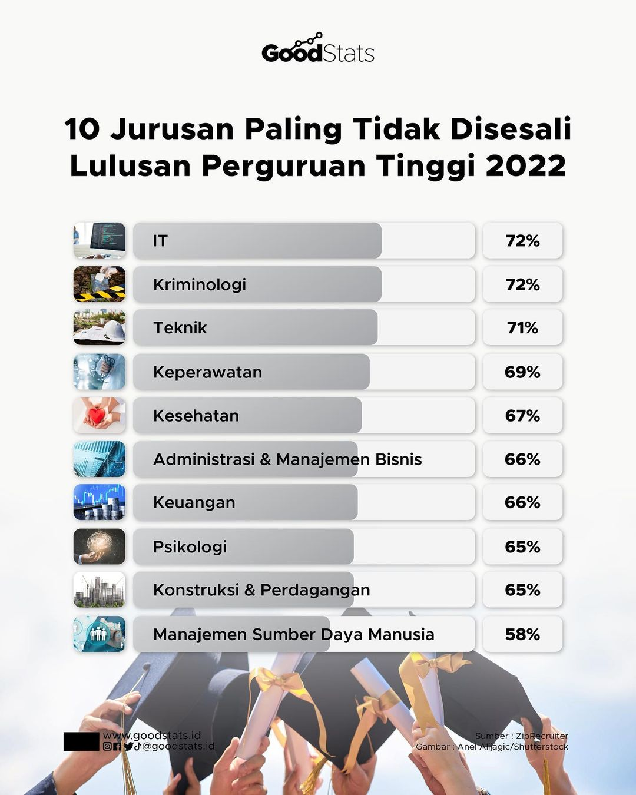

Dunia IT Terus Berkembang
Semakin hari, dunia ini semakin banyak membutuhkan orang-orang yang ahli di bidang ini dan mau mengembangkan teknologi yang ada sekarang.
Prospek Kerja Yang Sangat Luas
Salah satu hal yang paling dipertimbangkan saat memilih jurusan kuliah adalah prospek kerja. Oleh karena itu bisa dipertimbangkan untuk mengambil jurusan IT, karena di jurusan IT sendiri prospek kerjanya sangat amat menjanjikan.
Gaji 2 digit
Selain prospek kerja yang menjanjikan, gaji yang ditawarkan oleh pekerjaan IT juga sangat menggiurkan, bahkan untuk fresh graduate saja gajinya bisa di atas 10juta
Kebutuhan Perkuliahan Hanya Laptop
Selama proses kuliah, senjata kita hanyalah laptop yang memadai saja. hanya dengan 1 alat ini kita bisa memenuhi semua kebutuhan dan menyelesaikan kuliah hingga lulus menjadi sarjana
Menjadi Jurusan Paling Tidak Disesali
Bahkan dengan faktor-faktor di atas, jurusan IT menjadi top 1 Jurusan Paling Tidak Disesali Lulusan Perguruan Tinggi 2022 menurut goodstats
